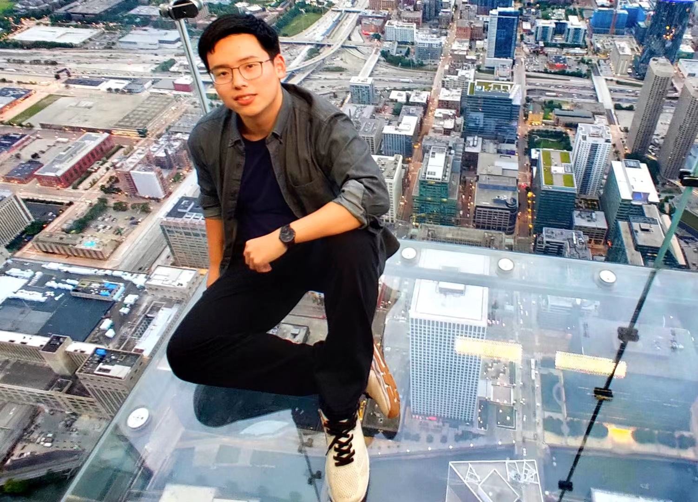

|  | I'm a junior student at
Zhejiang University/University of Illinois at Urbana-Champaign Institute. Major: Computer Engineering
Address: 718 East Haizhou Street, Haining city, Zhejiang province, China |
CS101-Intro Computing: Engrg & Sci(A-) learned some basic python and matlab programming language and skills.
ECE120-Intro to Computing(A) learned about assembly language and some basic concepts of machine-level architecture.
ECE220-Computer Systems & Programming(A) learned C and C++ programming skills.
CS225-Data Structures(A) learned concepts and applications of basic data structures, implementing data structures with C++.
ECE374-Algorithms and Models of Computation(A-) learned design and analysis of algorithms, formal languages and automata, computability, and complexity.
ECE391-Computer System Engineering(A) learned concepts of modern computer system design and system programming skills.
ECE448-Artificial Intelligence(A) learned basic concepts of AI, basic techiques of neuro network and reinforcement learning, coding with pytorch.
CS447-Natural Language Processing(A) learned basic concepts of computational linguistics, from morphology, syntax to semantics,
nlp applications such as syntax parsing, machine translation, generation and dialog systems
Python, C and C++ had practice of building neuro network by pytorch to accomplish nlp task like named entity recognition
I'm interested in AI and natural language processing. Recently, I've been involved in a knowledge graph construction projects for intelligent maintainance of power plant.
| Face recognition on a small scale of data Jun.2018-Aug.2018
Advisor: Haoji Hu, associate professor of Zhejiang University. |
| knowledge graph construction for intelligent maintainance of power plant Apr.2019-Present
Advisor: Hongwei Wang, associate professor of Zhejiang University maintainance report and build knowledge graph based on relation between knowledge Bi-LSTM-Lattice model to extract knowledge on conference ICEBE2019, and we are awared as Best Paper of conference. |
knowledge graph construction for intelligent maintainance of power plant, Yangkai Du, Jiayuan Huang, Shuting Tao, Hongwei Wang. Advances in E-Business Engineering for Ubiquitous Computing. ICEBE 2019. Lecture Notes on Data Engineering and Communications Technologies, vol 41. Springer, Cham.